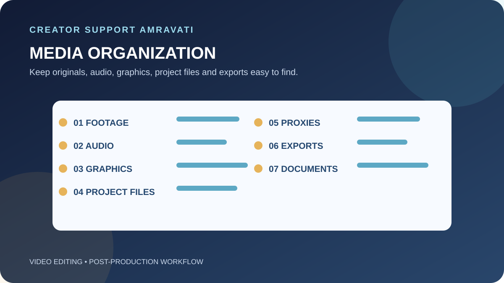
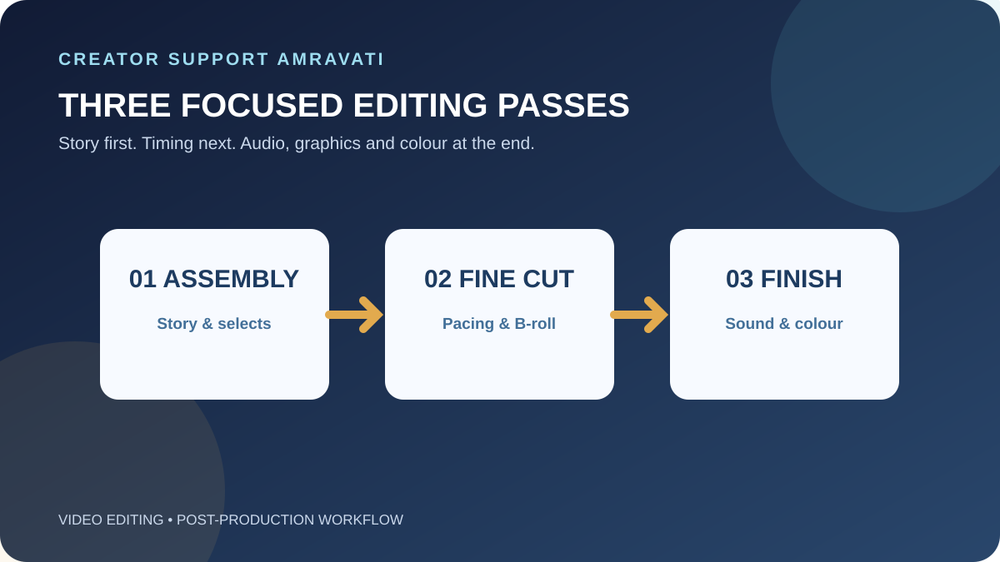

Before opening your editor, confirm the delivery format, target platform, deadline, aspect ratio and any client or brand requirements. A vertical social edit, a long-form YouTube episode and a multi-camera podcast may use the same software but need different project settings and review steps. Write down the deliverable before you start cutting.
1. Start with clean folder structure and media hygiene
Use a folder layout that makes sense to another editor as well as to you. Keep original camera files separate from generated proxies, project files, graphics and exports. A practical starting template is:

Project_Name/
01_Footage/
Camera_A/
Camera_B/
Phone/
02_Audio/
Dialogue/
Music/
Sound_Effects/
03_Graphics/
Logos/
Titles/
Images/
04_Project_Files/
05_Proxies/
06_Exports/
Drafts/
Finals/
07_Documents/Adapt the structure to the job. A single-camera Reel may not need separate camera folders, while a multi-camera interview benefits from clearly named sources. Keep the folder names consistent across projects so you do not have to reinvent the system each time.
Back up before editing
- Copy camera-card contents to your working storage and a separate backup location before formatting or reusing cards.
- Verify that copied files open and play. For important work, use a checksum-capable copy or backup tool rather than relying only on a quick drag-and-drop confirmation.
- Keep original camera media unchanged. Avoid renaming files on the card if the camera created linked sidecar or metadata files.
- Use clear names for project versions and exports. Keep drafts separate from approved deliverables.
Label the useful material
Review the footage once and mark strong takes, clean audio, important B-roll, mistakes and retakes. Use bins, markers, ratings or a simple shot log. Rename clips inside the editing project when useful, while preserving original file names and a clear link to the source media. For interviews, note the best answers or timecodes so you can build the story without repeatedly scrubbing every clip.
2. Keep timeline playback smooth
Timeline performance depends on codec, resolution, frame rate, effects, storage speed, memory, processor and graphics hardware. A powerful computer can still struggle with highly compressed or demanding camera formats. Start with the least disruptive performance setting and increase complexity only when needed.
Set the sequence for the actual delivery
Choose the frame size, orientation and frame rate based on the footage and intended destination. A 1920 × 1080 horizontal timeline suits many standard web videos; 1080 × 1920 is a common vertical canvas for short-form content. 4K may be appropriate when the source and delivery require it, but it increases storage and processing demands. Do not change frame rates casually mid-project: understand how the editor handles mixed-frame-rate footage and motion.
Use proxies or optimized media when playback is heavy
- Generate proxies when high-resolution, high-bitrate or difficult-to-decode footage makes editing unresponsive.
- Choose a proxy resolution and codec that provide smooth playback without consuming unnecessary storage.
- Keep proxy files linked to their originals through the editor's media-management system. Confirm that the application switches back to full-resolution sources for final rendering.
- Lower playback resolution or disable demanding preview effects while making editorial decisions, then restore full-quality monitoring for detail checks.
Proxies are a performance aid, not a replacement for source media or a guarantee of faster exports. Check the software's proxy workflow and relink behaviour before moving a project between computers.
Use keyboard shortcuts and stable storage
Learn the shortcuts you use repeatedly: play/pause, add edit, ripple delete, selection, undo, timeline zoom and moving between edits. Customize them only after you understand the default layout, and keep a reference nearby while learning. Store active media on a reliable drive with enough free space; avoid disconnecting or renaming source folders while a project is open.
3. Cut in stages: assembly, fine cut and polish

| Stage | Main job | Save for later |
|---|---|---|
| Assembly / rough cut | Select usable takes, build the story and remove obvious dead time. | Detailed transitions, elaborate titles and final colour looks. |
| Fine cut and pacing | Refine timing, remove distracting pauses, add relevant B-roll and improve clarity. | Small decorative effects that do not improve the message. |
| Finishing | Balance audio, add graphics and captions, match colour and prepare delivery. | Unrequested last-minute changes outside the agreed scope. |
Build the story before decorating the timeline
For interviews and educational videos, identify the key message and arrange the strongest material in a logical order. Remove repetitions and long gaps while preserving natural speech. For promotional edits, make sure the viewer can understand the offer, context and next step. Use B-roll to illustrate a point or hide a necessary edit—not simply to fill every second.
Use markers and review passes
Mark uncertain sections rather than stopping the entire edit to solve every small detail. Complete a full rough cut, review the flow, then make one focused pass for pacing and another for titles or captions. If feedback arrives from a client, collect it in one timecoded list where possible and distinguish required corrections from optional preferences.
4. Balance dialogue and add purposeful sound design
Audio should be understandable before it becomes decorative. Start by checking dialogue clips for clipping, hum, room noise, inconsistent distance and abrupt edits. Match loudness between speakers and sections so viewers do not need to keep adjusting the volume.
- Dialogue first: set a comfortable, consistent speech level and use fades or clip gain to smooth differences between takes.
- Noise reduction carefully: apply it only as much as needed. Heavy processing can create watery, metallic or artificial speech.
- Music second: keep music below speech and automate or duck it where the words need more space. There is no single music level that suits every voice, platform and mix.
- Sound effects with purpose: use subtle transitions, room tone or specific effects when they support the visual action. Avoid placing a loud effect on every cut.
- Check transitions: listen for clicks, sudden room-tone changes, clipped syllables and abrupt music endings.
Use headphones and, when possible, check the mix on ordinary speakers or a phone. Keep music and sound effects properly licensed or otherwise cleared for the intended use; do not assume that a track found online is free to use commercially.
5. Correct and match colour across shots
Colour correction aims to make the footage look coherent and natural before you create a particular style. Shots recorded under different lights, cameras or automatic settings can vary in exposure, contrast and white balance. Matching them makes edits feel less distracting.
- Start with exposure: balance overall brightness while protecting important highlights and retaining useful shadow detail.
- Set white balance: correct unwanted colour casts so neutral objects and skin tones look plausible across the scene.
- Match camera angles: compare shots from the same scene using scopes and side-by-side viewing where available. Match exposure and colour before applying a creative look.
- Apply a restrained look: use a LUT or grade as a starting point, not a one-click guarantee. Adjust intensity and check skin tones, saturated colours and highlight roll-off.
- Review the whole sequence: watch cuts in context. A frame can look attractive alone but feel too warm, dark or saturated next to the previous shot.
Monitor calibration, display brightness and colour-management settings affect what you see. For critical work, use a properly configured display and the colour-management guidance for your editing application and delivery platform. Avoid making major grading decisions on a display with unknown settings.
6. Export smartly and run a final quality check
Choose export settings based on the delivery specification, not on a universal preset. Confirm frame size, frame rate, codec, container, audio format and bitrate requirements for the client or platform. A high bitrate cannot fix a soft source, and an unnecessarily large file can slow uploads without improving the viewer's experience.
Use clear version naming
For example, use Brand_Interview_v01_Draft.mp4, Brand_Interview_v02_Review.mp4 and Brand_Interview_Final_Approved.mp4. Keep the project file and final export together in their respective folders, and record which version was approved. Avoid ambiguous names such as final-final-new.mp4.
Watch the rendered file
- Play the exported file from beginning to end, not only the timeline preview.
- Check black frames, frozen images, missing media, unexpected crop changes and incorrect aspect ratio.
- Listen for dialogue dropouts, clipping, audio pops, music that ends abruptly and channel or sync problems.
- Review captions, spelling, names, logos, lower-thirds, safe margins and on-screen contact details.
- Confirm that the file opens, plays smoothly and has the expected duration and file size.
- Keep a copy of the approved master and project assets according to the agreed retention and backup plan.
7. A repeatable editing checklist
- Confirm the brief, target platform, aspect ratio, frame rate and delivery deadline.
- Copy and verify camera originals in at least two storage locations before card reuse.
- Create project folders, import media and label important takes.
- Set the sequence and create proxies if playback needs them.
- Complete the assembly and rough cut before detailed polish.
- Refine pacing, B-roll, titles and captions in focused passes.
- Clean and balance dialogue, then add music and purposeful sound effects.
- Correct exposure and white balance, match shots and apply a restrained creative look.
- Export to the agreed specifications and watch/listen to the rendered file.
- Deliver the approved version with clear naming and retain the project backup.
Over time, save reusable project templates, title styles, export presets and folder structures. Keep them flexible: a podcast, wedding film, short Reel and corporate interview may share the same organizational habits but still require different editorial choices.
Frequently asked questions
How can I stop over-editing and finish projects faster?
Define what the video needs to communicate before you start. Timebox the rough cut, complete a full story pass and reserve separate sessions for pacing, audio and colour. Use a review checklist and avoid experimenting with effects that do not serve the brief.
Should I use proxies for every video?
No. Proxies are useful when original media causes slow playback or makes editing difficult. If your system handles the source footage smoothly, proxies may add unnecessary generation time and storage use. Test a short sample before creating them for a large project.
Is a desktop editing application better than a mobile app?
It depends on the project. Mobile apps can be convenient for quick social clips, while desktop non-linear editors often provide more detailed media management, multi-camera editing, audio control and colour tools for complex or long-form work. Choose the tool that reliably meets the deliverable.
What is the biggest habit that speeds up editing?
Organize and review the footage before detailed cutting. Knowing where your media is and which takes are strongest reduces repeated searching and makes every later stage more focused.
Should I apply a LUT to every camera clip?
Not automatically. Camera profiles and lighting conditions vary. Correct exposure and white balance, match shots, then use a LUT only when it is appropriate for the footage and colour-management workflow.
Editorial note: Menu names and proxy, colour-management and export options vary by editing application and version. Use the software's official documentation for exact settings, and test export presets against your intended platform or client specification. Keep licensed media and project backups organized. This article is educational and does not guarantee a particular editing speed or commercial result. Read our editorial policy.
Related reading: Explore our Podcast Audio Treatment Guide, Video Podcast Studio Setup Guide, Instagram Reels Strategy Guide, Smartphone Video Production Guide, Video Editing services, Video & Photo Production services and all CSA services.
Further reading: Adobe Premiere Pro proxy workflow · DaVinci Resolve training resources · Adobe Premiere Pro colour workflow guidance.